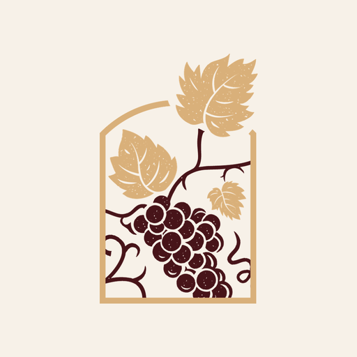

Accueil › Notre actualité › Mon Chai Notes est disponible
Mon Chai Notes est disponible : vos saisies à la vigne et au chai
Une opération vient d’être réalisée dans les vignes ou dans la cuverie ? Mon Chai Notes permet de la préparer sur votre téléphone Android, à la voix ou au clavier. Vous relisez la fiche, vous complétez les informations utiles, puis vous confirmez l’envoi dans votre compte Mon Chai.

À retenir
- Une application Android, disponible depuis votre compte Mon Chai.
- Transferts, traitements, vendanges, analyses et notes : les opérations proposées dépendent des accès de votre exploitation.
- Vous vérifiez et validez chaque fiche avant son envoi.
Une saisie qui commence sur le terrain
Au chai, vous venez de transférer un vin d’une cuve vers une autre. À la vigne, une intervention se termine. Ce sont des informations précieuses à garder pendant qu’elles sont encore fraîches. Mon Chai Notes vous propose de commencer la saisie à cet endroit, depuis le téléphone que vous avez avec vous.
Par exemple, vous pouvez décrire un transfert en précisant les cuves et le volume. L’application prépare une fiche à rapprocher des références de votre exploitation. Vous préférez écrire ? Le clavier permet de suivre le même parcours.
Décrire, vérifier, puis envoyer
Une phrase ne suffit pas toujours à préciser une opération. Une date peut manquer, une cuve doit être choisie ou un volume mérite une relecture. La fiche reste à vérifier tant que vous ne l’avez pas confirmée. Vous gardez ainsi la main sur les informations envoyées à Mon Chai.
Mon Chai contrôle ensuite la saisie avant de l’enregistrer. L’activité de l’application permet de distinguer les saisies à vérifier, en attente, à corriger ou synchronisées.
Comment installer Mon Chai Notes ?
Ouvrez la page d’installation depuis votre téléphone Android et connectez-vous avec votre compte habituel. Le téléchargement nécessite que l’accès mobile soit ouvert pour votre exploitation. La page présente les étapes d’installation et les écrans de l’application.
Cette version est distribuée depuis le compte Mon Chai, pas encore depuis Google Play ou l’App Store. Après une première connexion, vous pouvez préparer des saisies sur le téléphone ; la transcription de la voix et l’envoi nécessitent Internet. Les droits restent ceux de votre compte.
Une application à faire évoluer avec vous
Nous voulons un outil simple à utiliser au milieu des gestes du domaine. Les retours sur les informations à compléter, le vocabulaire employé ou le suivi des envois nous aident à améliorer ce parcours. Vous pouvez nous transmettre vos remarques après vos premiers essais.
Emportez Mon Chai sur le terrain
Découvrez les écrans de Mon Chai Notes et retrouvez les étapes pour l’installer depuis votre compte.